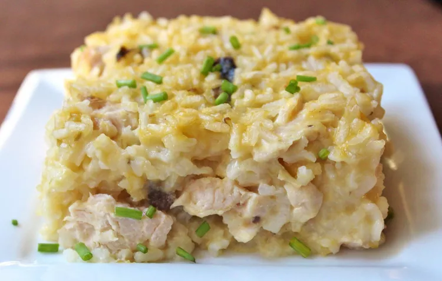

Mamaw's Chicken and Rice Casserole

Description
There's nothing like an old-fashioned recipe straight from your grandma's recipe box. Need proof? Mamaw's Chicken
and Rice Casserole is comfort food incarnate. This simple, affordable, and absolutely irresistible meal will
warm you up from the inside out.
Ingredients
- Chicken Breasts
- Water
- White Rice
- Cream of Chicken Soup, Cream of Celery Soup, and Cream of Mushroom Soup
- Salt and Pepper
- Butter
Steps
- Gather all ingredients. Preheat the oven to 400 degrees F (200 degrees C). Grease sides and bottom of a
casserole dish.
- Stir chicken, water, rice, cream of chicken soup, cream of celery soup, and cream of mushroom soup together
in the prepared casserole dish; season with salt and pepper.
- Arrange butter evenly over the top of the chicken mixture.
- Bake in the preheated oven until the rice is tender and the chicken is cooked through, 1 hour to 75 minutes.
- Cool 10 to 15 minutes before serving. Enjoy!
Home